Drupal Community
How to get people involved
Future of tools to get work done
d.o: YesCT
@YesCT

Cathy Theys
Cheppers
d.o: rzilouc2
@RoshanakZM
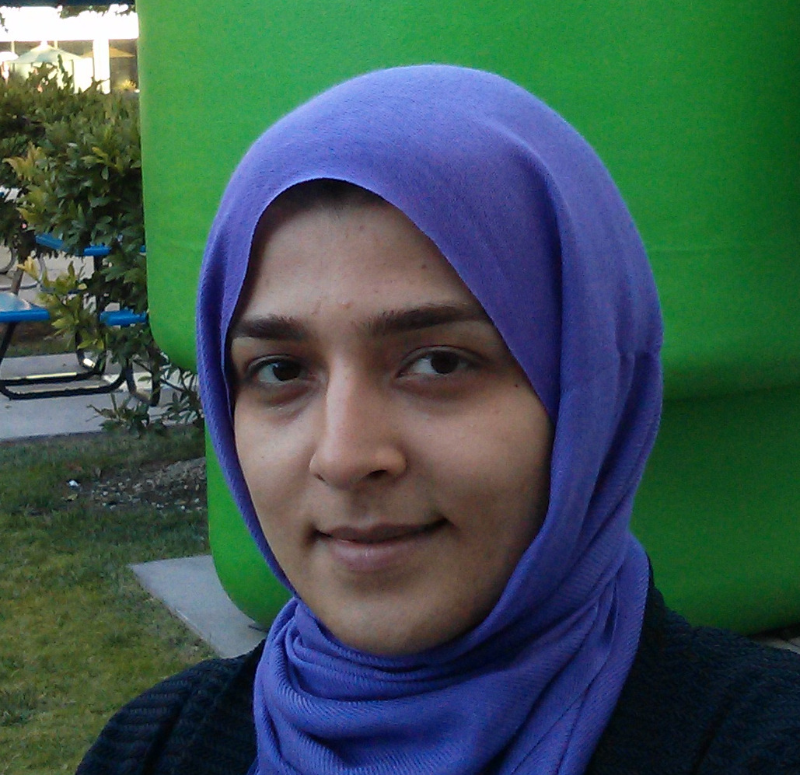
Roshanak Zilouchian
University of Illinois at Urbana-Champaign
Community Building with Mentoring:
What makes people crazy happy to work on an open source project?
Scale
People
to
contributors
In the community
People to participants
Outreach
Repeat information
Repeat opportunities
announce opportunities to participate
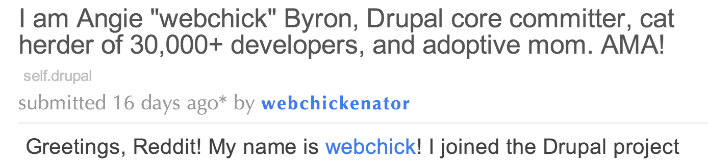
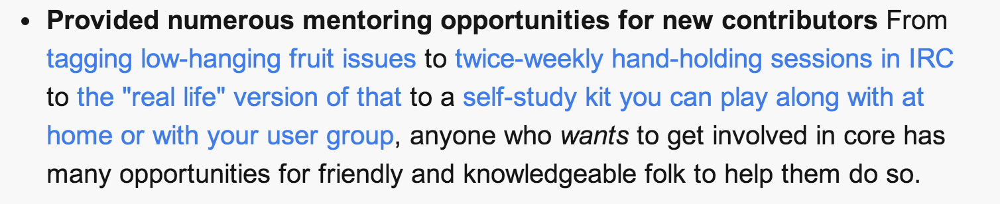
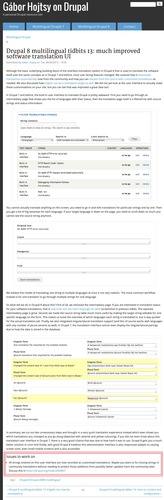
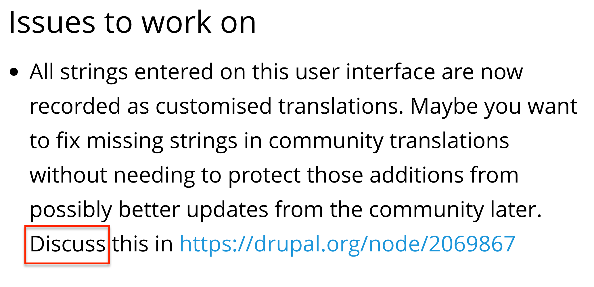
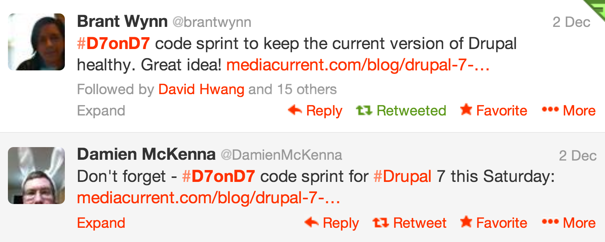
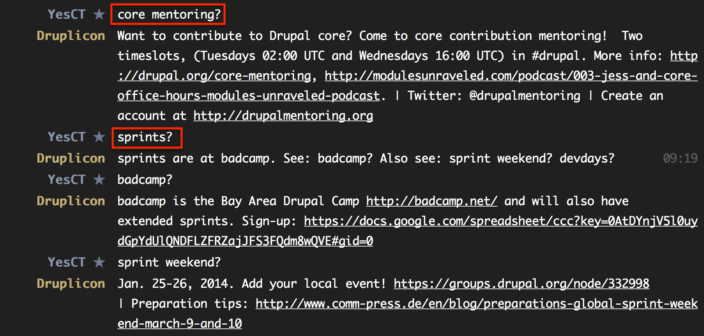
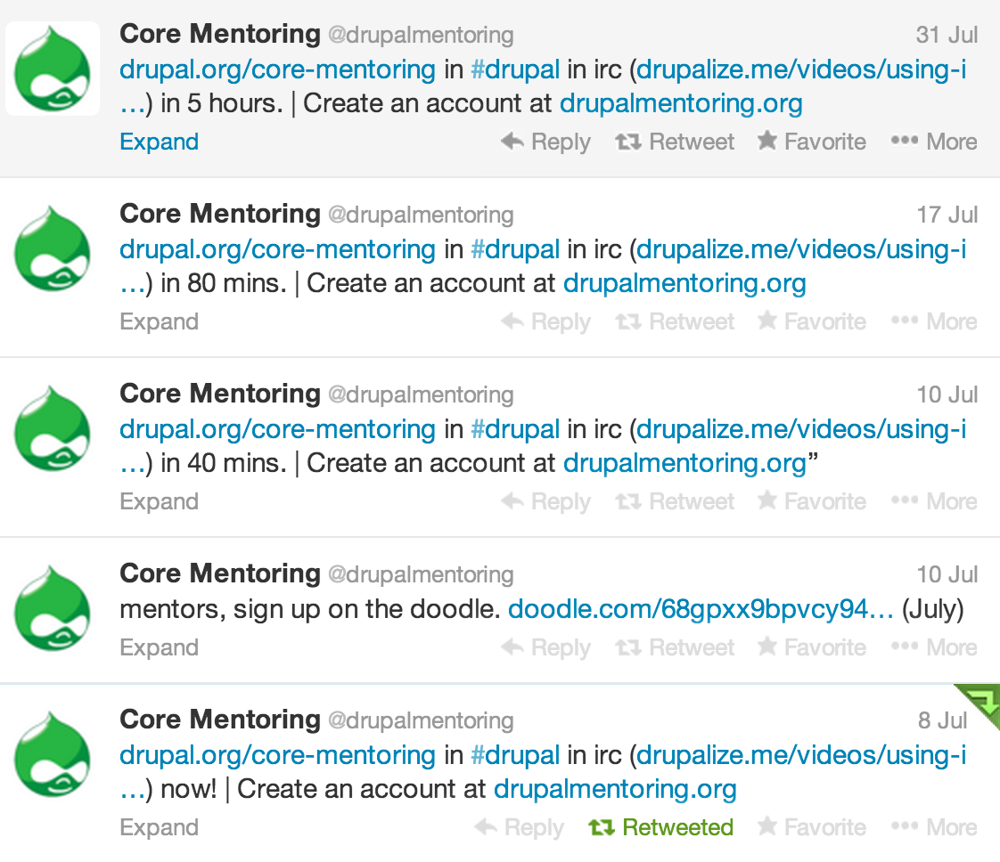
Participants
to
habitual participants
Habitual Participant
to
Mentor
Directing Covert Positive Change

Habitual Participants
to
Mentor
Mentor
to
habitual mentor
Habitual mentor
to
a mentor of mentors
It's the people, people
It's the people,
but we need tools to support people!
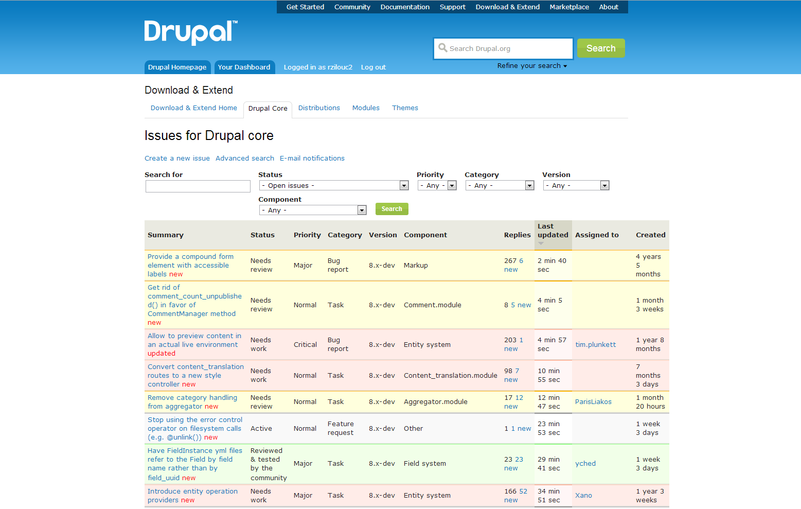
The social process matters as much as the result.
But the issue queue doesn't support the social process...
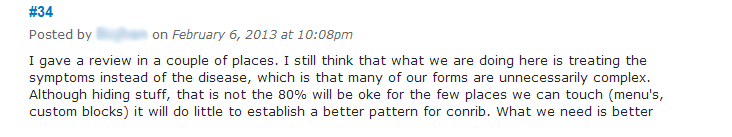
All comments are represented in a similar way...
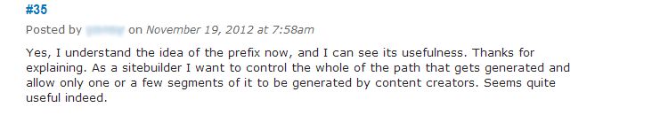
There is no way to track the proposed solutions
Or to become aware of arguments for or against the proposed solutions
Or to figure out the current direction of the discussion
If we care about the process, we need to design for supporting the process...
What can we do?
Demo of Procid
Action
Come to the BOF:
Attend the sprint:
Watch:
Join irc:
Suggest things in sandbox issue queue:
Give feedback please. Tweet @YesCT @RoshanakZM
Questions?